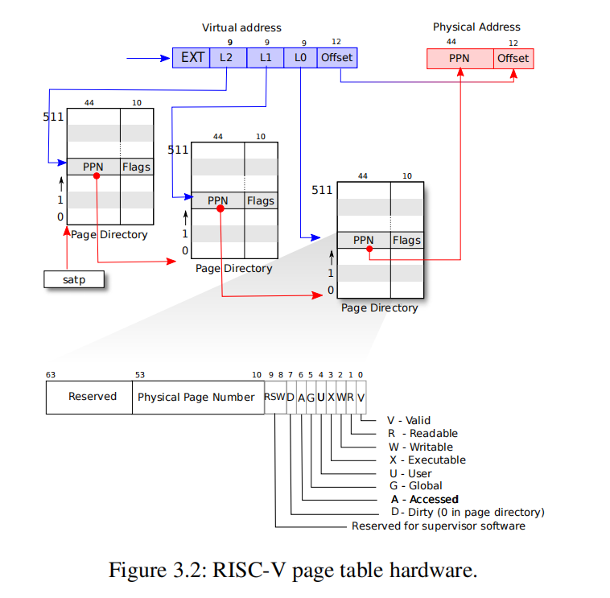
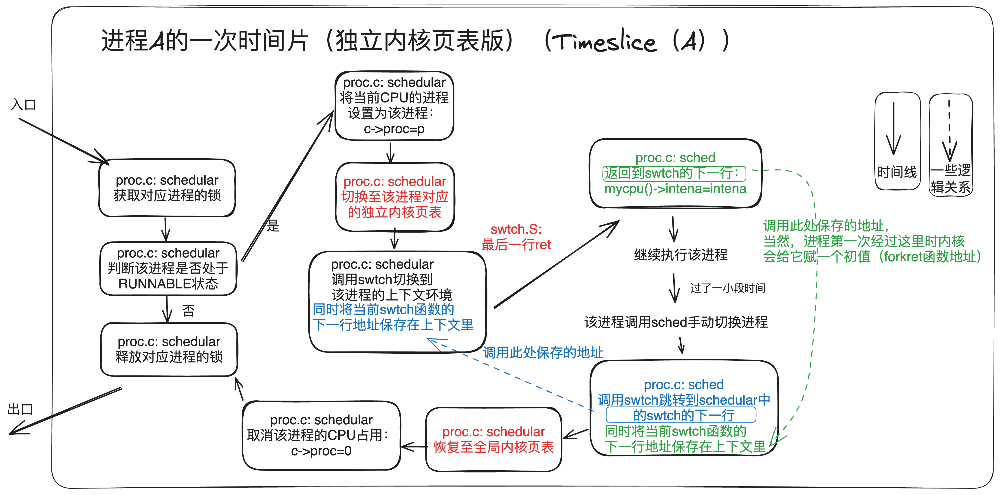
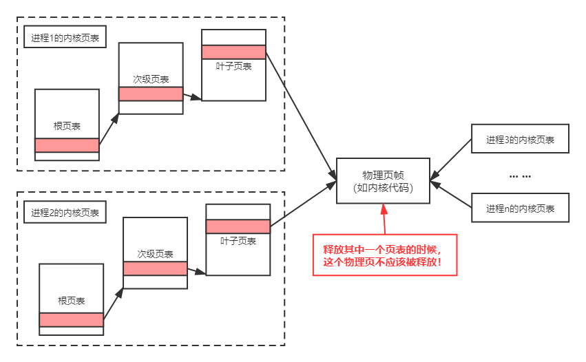
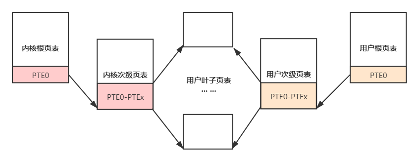

实验实现¶
如何阅读本页
- 本页给出
Lab4的推荐推进顺序、实现提示和常见坑点。 - 真正动手前，建议先结合 实验原理 把页表结构、调度流程和用户地址访问方式理清楚。
- 如果你在实现时卡住，优先回看
kernel/vm.c、kernel/proc.c、kernel/riscv.h，以及本页提到的几个关键函数。
开始前的一个建议
本实验会频繁修改 kernel/vm.c 和 kernel/proc.c。先读懂相关函数的输入、输出和副作用，再开始改代码，通常会少走很多弯路。
0. 任务零：回答问题¶
回答问题
这些内容建议写进实验报告中：
- 页表机制为什么会被发明？它解决了什么问题？
- 按照 Sv39 的规则，给定一个 64 位虚拟地址后，硬件是怎样一步步得到最终物理地址的？
- 为什么 Sv39 中的
L2、L1、L0都是 9 位，而不是 8 位或 10 位？ - 如果把 Sv39 换成 Sv48，你能画出四级页表的数据结构和翻译过程吗？
下面这张图可以作为回忆 Sv39 结构的参考：

1. 任务一：打印页表¶
这一题主要目标是补出 vmprint()，让它成为后面调试页表问题时最直接的观察工具。
void vmprint(pagetable_t pgtbl)
1.1 先明确目标¶
这一题真正要做的是：
- 按多级页表结构递归打印所有有效项；
- 正确区分页表页和叶子映射；
- 让输出格式和指导书保持一致。
1.2 推荐实现顺序¶
- 先切换到
pgtbl分支，并确认代码能正常编译运行。 - 先把递归打印函数的思路想清楚：当前层级、当前虚拟地址前缀、缩进三者之间是什么关系。
- 再决定如何区分“继续往下递归的页表页”和“已经是最终映射的叶子项”。
-
实现
vmprint()后，在exec()中只保留一处调用，例如：if(p->pid == 1) vmprint(p->pagetable);
为什么通常放在 exec() 里打印？
一个常见做法是在第一个用户进程启动时打印页表。这样输出最干净，也最容易和题目给出的示例逐项对照。
1.3 和指导书格式对照¶
建议对照 实验概述 3.2.2 结果示例，确认下面几件事都一致：
- 层级结构是否正确；
- 有效项数量是否一致；
- 打印出的虚拟地址是否正确。
1.4 实现提醒¶
vmprint()通常放在kernel/vm.c，并在kernel/defs.h中声明。- 判断一个 PTE 是否是“下一级页表”还是“叶子映射”时，记得用
PTE_V和PTE_R / PTE_W / PTE_X的组合来区分。 kernel/vm.c中的freewalk()很值得参考：它本身就在递归遍历多级页表。- 打印指针时可以直接使用
printf("%p", ...)。 - 如果你想拿系统里的页表和自己的输出做对照，可以先参考 VSCode 图形化调试指南（二）系统调用 进入 QEMU 调试环境，再使用
info mem查看页表。
freewalk() 可以参考什么？
freewalk() 的作用是：递归释放页表树中的各级页表页。 它特别值得参考的地方，不是“释放”本身，而是它已经把“如何判断当前 PTE 指向下一层页表”以及“如何递归遍历多级页表”写得很清楚了。
对 vmprint() 来说，你最需要借鉴的是这两点：
- 遇到“非叶子项”时，如何取出下一层页表并继续递归；
- 遇到“叶子项”时，说明这里已经是最终映射，不应再往下走。
下面是 xv6 中 freewalk() 的典型写法，附了简要注释：
| kernel/vm.c | |
|---|---|
1 2 3 4 5 6 7 8 9 10 11 12 13 14 15 16 17 18 19 20 21 22 23 | |
你在写 vmprint() 时，可以沿用它对“非叶子项”和“叶子项”的判断方式：遇到非叶子项就继续递归，遇到叶子项则说明这里已经是最终映射，需要把这一项打印出来。不同的是，freewalk() 会递归并释放，而 vmprint() 应该递归并打印。
2. 任务二：独立内核页表¶
这一题的核心是：把“所有进程共用一张内核页表”改成“每个进程各自拥有一张内核页表”，并保证调度、内核栈和页表回收仍然正确。
2.1 先明确目标¶
这一题完成后，应该同时满足：
- 原版 xv6 的全局
kernel_pagetable仍然保留； - 每个进程在内核态运行时，使用自己的独立内核页表；
- 调度器
scheduler()自己运行时，仍然有一张可用的内核页表； - 每个进程的内核页表中，都能访问该进程自己的内核栈；
- 释放进程时，只释放“属于这张页表结构本身的页表页”，不能误释放共享的内核物理页。
2.2 推荐实现顺序¶
-
先修改
kernel/proc.h中的struct proc，为每个进程保存独立内核页表及其相关信息。通常至少会新增两类信息：
- 进程自己的内核页表指针，例如
k_pagetable； - 内核栈对应的物理地址，例如
kstack_pa。
- 进程自己的内核页表指针，例如
-
再仿照
kvminit()写一个“创建进程私有内核页表”的函数。推荐做法是：不要修改全局
kernel_pagetable，而是额外创建一张新的内核页表并返回。 这一步通常只是“为单个进程准备一张可用的内核页表”，而不是替换系统原有那张全局内核页表。这里一般也不要把CLINT映射进去，否则后面任务三做“用户映射并入内核页表”时会更容易遇到地址重合问题，见 实验原理 3.5。 -
接着修改
procinit()。内核栈的物理页仍然是在系统启动阶段、按进程槽位一次性分配好的。这里最重要的是区分两件事：- 哪一步负责“分配内核栈物理页”；
- 哪一步负责“把它映射进进程私有内核页表”。
一种常见做法是：
- 在
procinit()里继续为每个进程槽位分配内核栈物理页； - 同时把这个物理地址保存到
struct proc新增字段里，例如kstack_pa； - 并继续保留它在全局
kernel_pagetable里的映射； - 之后再在
allocproc()中，把它映射到该进程自己的独立内核页表里。
这里的“内核栈映射”是什么？
原版 xv6 会在
kernel/proc.c的procinit()中做两件事：先为每个进程槽位分配一页内核栈物理内存，再把KSTACK(i)这个固定虚拟地址映射到这页内存。这一题里，这条映射不能只放在全局
kernel_pagetable里，还要出现在该进程自己的内核页表中。procinit()负责“先分配物理页并保留全局映射”，allocproc()再负责“补上进程私有内核页表里的那条映射”。对照源码时，可以先看procinit()，再看allocproc()和kernel/vm.c里的kvmmap()。 -
再修改
allocproc()。它通常是“真正把进程私有内核页表建起来”的位置。可以按下面的顺序处理：
- 先建立用户页表
p->pagetable； - 再调用你前面写好的“创建进程私有内核页表”的函数，得到
p->k_pagetable； - 然后把
p->kstack -> p->kstack_pa这条映射补到p->k_pagetable里。
也就是说，当 CPU 切到某个进程自己的内核页表后，
p->kstack这个内核栈虚拟地址仍然必须能访问到p->kstack_pa对应的那页物理内存；否则这个进程一进入内核，就找不到自己的内核栈。 - 先建立用户页表
-
然后修改调度器
scheduler()，在切换进程时同步切换内核页表。可以按下面处理：
- 切到某个进程前，把
satp切到该进程自己的内核页表； - 切换完成后执行
sfence_vma()； - 当没有进程运行，或调度器自己在运行时，再切回全局
kernel_pagetable。
下面这张图可以帮助你把“原版调度流程”和“引入独立内核页表后的流程”对照起来看：

- 切到某个进程前，把
-
最后修改
freeproc()，正确释放进程私有内核页表结构。这一题需要改
freeproc()，因为现在每个进程除了用户页表外，又多了一张自己的内核页表。进程退出时，这张页表对应的各级页表页也应当在freeproc()里一起处理；否则就会产生页表页的内存泄漏。既然这里要释放页表，很自然会想到调用
freewalk()。但原版freewalk()只适合处理“叶子映射已经提前拆掉、只剩页表结构”的情况；而p->k_pagetable里通常还保留着有效叶子映射，例如内核代码、内核数据、设备映射，以及该进程自己的内核栈映射。所以，这里需要找到一种 能递归释放页表结构，但不去释放叶子映射指向的物理页帧 的方法，否则会产生非常严重的后果！freewalk()对这里的启发是什么？freewalk()最值得参考的，不是它“最后调用了什么函数”，而是它递归遍历页表树的方式：- 有效且没有
R/W/X权限位，说明当前 PTE 指向下一层页表； - 有效且带有
R/W/X权限位，说明当前 PTE 已经是叶子映射； - 递归顺序是“先处理子页表，再处理当前页表页”。
所以，这一题更合适的做法是：参考
freewalk()的递归遍历方式，新建一个专门处理内核页表释放的函数。这个函数仍然递归遍历页表树，但把“遇到叶子项时的处理方式”改掉。也就是说，遇到叶子项时不再像原版那样直接panic("freewalk: leaf")，而是只清掉 PTE，不去释放叶子项指向的物理页。这里所谓“清掉 PTE”，通常就是把当前页表项直接置为0，例如pagetable[i] = 0。这一点为什么特别容易写错？
最常见的错误有这几个：
- 直接在
freeproc()里调用原版freewalk(p->k_pagetable)，结果报freewalk: leaf； - 遇到叶子映射就顺手
kfree()它指向的物理页，结果把共享的内核页也一起释放掉； - 如果内核栈物理页是在
procinit()按槽位预先分配好的，又在freeproc()里把kstack_pa释放掉，之后这个槽位复用时就会出问题； - 释放完后忘记把
p->k_pagetable置零。

- 有效且没有
2.3 容易踩坑的点¶
- 不要删掉原有的全局
kernel_pagetable。 调度器和“当前没有用户进程在跑”的路径仍然需要它。 - 不要忘记映射内核栈。 这是任务二里最常见的崩溃来源之一。
- 如果你修改了
satp，通常还要执行sfence_vma()；否则 TLB 里可能还留着旧页表的翻译结果。 - 释放进程私有内核页表时，只能释放页表页本身，不能误释放共享叶子映射对应的物理页。
- 这一题尽量用 最简单、最小改动 的方式做出来，不要为了“顺手优化”而大改内核整体机制。
3. 任务三：简化软件模拟地址翻译¶
这一题的目标是：把用户页表的一部分映射并入进程私有内核页表，并把原来依赖软件模拟翻译的 copyin() / copyinstr() 改为调用实验框架提供的新实现。
3.1 先明确目标¶
完成后应满足：
- 独立内核页表中包含对应进程的用户地址映射；
copyin_new()/copyinstr_new()被接到正确的调用路径上；- 用户页表变化时，独立内核页表里的对应映射也能同步更新；
- 不会因为权限位、地址重合或页表回收引入新的错误。
实验框架已经提供了什么？
copyin_new() / copyinstr_new() 已经由实验框架提供，定义在 kernel/vmcopyin.c 中。你需要做的是把系统改为调用这两个实现，而不是从零实现它们。
3.2 推荐实现顺序¶
-
先写一个
sync_pagetable之类的同步函数，把进程的用户页表映射到该进程自己的内核页表中，并在defs.h中声明。推荐做法是：让独立内核页表直接共享用户页表的最后一级页表。 也就是说，私有内核页表中覆盖用户空间的那部分次级页表项，直接指向用户页表对应的最后一级页表。这样不必把用户页表的全部叶子 PTE 逐项复制进内核页表，也不必额外修改这些页表项的标志位；但在页表回收阶段，需要注意避免重复释放。
你可以结合前面分析过的用户地址范围
0x0 ~ 0x0C000000，先自己算一下：需要同步多少个次级页表项；然后通过p->pagetable找到用户页表中对应的那一段页表项，覆盖到p->k_pagetable的对应位置。你也可以选择“把用户映射逐项复制到内核页表”这条路线，但这样会增加实现复杂度和运行开销。

-
再把
copyin()/copyinstr()改为调用新的实现。可以按下面顺序处理：
- 先把
copyin()改为调用copyin_new()； - 建议先把后面几个关键步骤处理完，并确认
copyin_new()已经能正常工作后，再回来把copyinstr()改为调用copyinstr_new()。
这样做的原因是：
copyin_new()只是从用户地址中拷贝固定长度的数据，行为更直接；而copyinstr_new()还要处理字符串结束符和跨页读取，调试时更容易把“字符串本身的问题”和“页表映射的问题”混在一起。 - 先把
-
然后处理权限问题。
这里的关键是：用户映射并入独立内核页表后，内核不一定就能直接访问它。
如果你选择共享用户页表的最后一级页表，那么用户 PTE 上的
U位也会一起被共享过来。此时，一个常见做法是配合sstatus的SUM位：- 调用
copyin_new()/copyinstr_new()之前，设置SUM； - 调用结束后，再清掉
SUM。
例如：
w_sstatus(r_sstatus() | SSTATUS_SUM); ... w_sstatus(r_sstatus() & ~SSTATUS_SUM); - 调用
-
再处理页表同步。
用户页表不是只在创建时才变化，因此同步逻辑也不能只做一次。下面几个位置都要考虑：
fork()：子进程会继承父进程的用户地址空间。这里通常是在子进程的用户页表和私有内核页表都准备好之后，再对 子进程 调用一次sync_pagetable()。注意，struct proc *np是子进程的 PCB，struct proc *p是父进程的 PCB，不要用错了。exec()：它会丢弃旧的用户页表，重新建立一张新的用户页表。因此在新页表真正装到当前进程上之后，也要再调用一次sync_pagetable()。growproc()/sbrk()：sbrk()是用户态申请或回收内存时走到的系统调用入口，而真正修改当前进程用户地址空间大小的，通常是内核里的growproc()。因此，更常见的改法是在growproc()完成扩容或缩容之后，再重新同步一次页表。userinit()：第一个进程同样会建立自己的用户页表和独立内核页表，这里也不要漏掉同步。
-
最后处理释放路径。
这一点需要和任务二第
6点连起来看。任务二中，freeproc()已经需要回收进程私有内核页表；而在这里的共享方案下，这张私有内核页表中会有一段目录项直接指向用户页表的下一级页表。因此，如果直接沿用任务二里递归释放页表的逻辑，递归过程就可能顺着这些目录项进入用户页表，并把本应由用户页表管理的页表页一并释放。这样后面再通过用户页表自己的释放路径去回收
p->pagetable时，就可能发生重复释放，进一步导致panic或内存破坏。所以，在回收私有内核页表之前，需要先增加一步：先清掉那段指向用户页表次级页表的目录项，再回收剩余的内核页表结构。
可以按下面处理：
- 先编写一个辅助函数，专门负责清掉这段指向用户页表次级页表的目录项；
- 在这个辅助函数中，找到私有内核页表里覆盖用户空间的那一段目录项；
- 将这些目录项直接清零，使私有内核页表不再沿着它们访问到共享来的用户页表；
- 这里清零的只是私有内核页表中的这组引用，不是在这里释放用户页表本身；用户页表仍然应当由
p->pagetable那条释放路径负责回收； - 然后再调用任务二里你自己写好的递归释放逻辑，只回收这张私有内核页表剩余的页表页；
- 最后把
p->k_pagetable置零。
-
最后跑测试，确认改动后的实现确实被用到了，并且没有把地址空间搞乱。
如果你前面是先只把
copyin()改成了调用copyin_new()，那么这里记得回过头把copyinstr()也改为调用copyinstr_new()，然后再统一跑测试。
3.3 容易踩坑的点¶
- 不要修改
kernel/vmcopyin.c。这部分是实验框架已经提供好的。 - 如果你共享了用户页表的最后一级页表，就要特别注意：页表回收时不能把共享结构重复释放。
- “同步页表”不只是处理新增映射，也要考虑地址空间缩小时如何去掉陈旧映射。
fork()里很容易把父进程p和子进程np用混。- 地址重合问题不要忘，见 实验原理 3.5。
4. 测试与收尾¶
建议按下面顺序检查：
- 任务一完成后，先对照指导书中的
vmprint()输出格式。 - 任务二完成后，先跑
kvmtest，再跑usertests。 - 任务三完成后，可以先跑
stats stats看修改后的实现是否真的被用到，再跑usertests和make grade。
如果你在这一页里改完逻辑后仍然遇到异常，优先看两类问题：
- 页表切换后没有及时
sfence_vma()； - 页表结构对了，但映射缺失、权限位错误，或误释放了共享页。